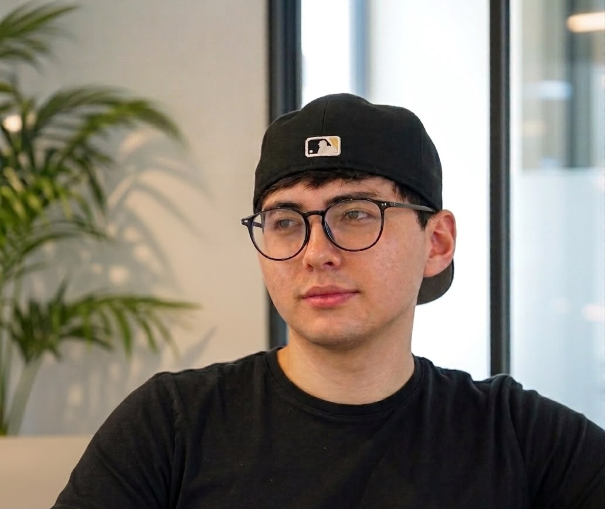

Técnico de Soporte TI & practicante de Ciberseguridad. Mantenimiento a servidores Linux, supervición de Logs en SIEM, Desarrollo de herramientas basadas en IA — en San José, Costa Rica, estudiando Ciencias de la Computación en la UCR tras completar un técnico en Ciberseguridad.

// servicios principales
// proyectos
Script de PowerShell que automatiza copias de seguridad cifradas con compresión 7-Zip, programado mediante el Programador de Tareas de Windows para que la protección de datos no dependa de que alguien se acuerde de ejecutarlo.
Herramienta de línea de comandos que hace ping a una lista de hosts, escanea puertos TCP comunes (22, 80, 443, 3389) y exporta los resultados a CSV — pensada para detectar un servicio caído antes de que llegue el ticket.
Laboratorio casero que combina un Controlador de Dominio de Windows virtualizado con una instancia de Wazuh SIEM, construido para practicar gestión de usuarios, políticas de grupo y visibilidad real de logs en los canales de Seguridad, Sistema, Aplicación, Directory Service y DNS.
// experiencia
Practicante de Soporte Técnico → Asistente de Soporte Técnico
Procuraduría General de la República, Costa Rica
// educación
Bachillerato en Ciencias de la Computación (en curso)
Universidad de Costa Rica (UCR)
Título Técnico en Ciberseguridad
C.T.P. José Albertazzi Avendaño
// certificaciones
// idiomas
// contacto